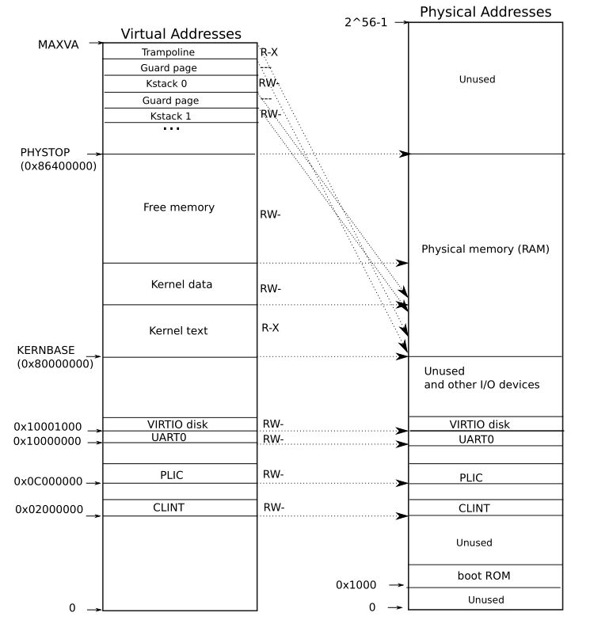

Lab6和Lab5比较相似，都是利用页错误的一些实现，这个Lab是要我们实现写时复制(Copy on Write)。
在 shell 中执行指令时，首先会 fork 一个子进程，然后在子进程中使用 exec 执行 shell 中的指令。在这个过程中，fork 需要完整的拷贝所有父进程的地址空间，但在 exec 执行时，又会完全丢弃这个地址空间，创建一个新的，因此会造成很大的浪费。
为了优化这个特定场景（fork 时）的内存利用率，我们可以在 fork 时，并不实际分配内存，而是让子进程和父进程共享相同的内存区域（页表不同，但指向的物理地址相同）。但为了保证进程之间的隔离性，我们不能同时对这块区域进行写操作，因此，设置共享的内存地址只有读权限。当需要向内存页中写入数据时，会触发缺页中断，此时再拷贝一个内存页，更新进程的页表，将内容写进去，然后重新执行刚才出错的指令。
在这个过程中，需要为每个物理内存页保存一个指向该内存页的页表数量。当为 0 时，表示没有进程使用该内存页，可以释放了；大于 1 时，每当有进程释放该内存页时，将对应的数值减一。
需要注意的是，这里要标记写入内存是 COW 场景。否则，如果真的有一个页面只能读不能写的话，就会出现问题。这里我们使用的是 PTE 页表项保留的标记位 RSW。
另一个知识点：在XV6中，除了 trampoline page 外，一个物理内存 page 只属于一个用户进程。
这个实验只有一个任务，就是实现cow。
根据任务提示，我们首先需要对所有可能会被读写的物理页面创建一个引用计数。那么问题来了，这个“所有”的范围是多少呢？我们已经清楚在xv6中不是所有的物理地址都能被访问的，从下图可以看出，我们能访问的地址范围是是从KERNBASE到PHYSTOP。

因为一个页表的大小是4096，所以数组的范围大小就是((PHYSTOP - KERNBASE) / PGSIZE)，定义如下：
// kernel/kalloc.c
uint page_ref[(PHYSTOP - KERNBASE) / PGSIZE];接着定义cow用到的符号位和相关的宏：
// kernel/riscv.h
#define PTE_COW (1L << 8)
#define COW_INDEX(pa) (((uint64)(pa) - KERNBASE) >> 12)接下来修改kalloc()和kfree()，在kalloc时将计数设为1，kfree时如果计数大于1时直接减1，否则才释放：
// kernel/kalloc.c
void *
kalloc(void)
{
struct run *r;
acquire(&kmem.lock);
r = kmem.freelist;
if(r)
kmem.freelist = r->next;
release(&kmem.lock);
if(r) {
memset((char*)r, 5, PGSIZE); // fill with junk
page_ref[COW_INDEX(r)] = 1;
}
return (void*)r;
}
void
kfree(void *pa)
{
struct run *r;
if(((uint64)pa % PGSIZE) != 0 || (char*)pa < end || (uint64)pa >= PHYSTOP)
panic("kfree");
//acquire(&ref_lock);
if(page_ref[COW_INDEX(pa)] > 1) {
page_ref[COW_INDEX(pa)]--;
//release(&ref_lock);
return;
}
page_ref[COW_INDEX(pa)] = 0;
//release(&ref_lock);
// Fill with junk to catch dangling refs.
memset(pa, 1, PGSIZE);
r = (struct run*)pa;
acquire(&kmem.lock);
r->next = kmem.freelist;
kmem.freelist = r;
release(&kmem.lock);
}在创建好计数数组后，在 fork 时，直接使用原来的物理页进行映射，我们需要修改uvmcopy 函数，记得声明外部变量page_ref：
// kernel/vm.c
extern uint page_ref[]; // kalloc.c
int
uvmcopy(pagetable_t old, pagetable_t new, uint64 sz)
{
pte_t *pte;
uint64 pa, i;
uint flags;
//char *mem;
for(i = 0; i < sz; i += PGSIZE){
if((pte = walk(old, i, 0)) == 0)
panic("uvmcopy: pte should exist");
if((*pte & PTE_V) == 0)
panic("uvmcopy: page not present");
pa = PTE2PA(*pte);
*pte = (*pte & ~PTE_W) | PTE_COW;
flags = PTE_FLAGS(*pte);
//if((mem = kalloc()) == 0)
// goto err;
//memmove(mem, (char*)pa, PGSIZE);
if(mappages(new, i, PGSIZE, pa, flags) != 0){
//kfree(mem);
goto err;
}
//acquire(&ref_lock);
page_ref[COW_INDEX(pa)]++;
//release(&ref_lock);
}
return 0;
err:
uvmunmap(new, 0, i / PGSIZE, 1);
return -1;
}然后和上一个实验一样，在usertrap中增加页错误的处理：
// kernel/trap.c
// in usertrap()
else if(r_scause() == 15) {
uint64 va = r_stval();
if(va >= p->sz)
p->killed = 1;
else if(cow_alloc(p->pagetable, va) != 0)
p->killed = 1;
}其中的cow_alloc函数如下，记得在defs.h中声明该函数和添加walk函数的声明。因为这里需要判断很多异常情况，所以比较考验细致程度。
// kernel/kalloc.c
int
cow_alloc(pagetable_t pagetable, uint64 va) {
va = PGROUNDDOWN(va);
if(va >= MAXVA) return -1;
pte_t *pte = walk(pagetable, va, 0);
if(pte == 0) return -1;
uint64 pa = PTE2PA(*pte);
if(pa == 0) return -1;
uint64 flags = PTE_FLAGS(*pte);
if(flags & PTE_COW) {
uint64 mem = (uint64)kalloc();
if (mem == 0) return -1;
memmove((char*)mem, (char*)pa, PGSIZE);
uvmunmap(pagetable, va, 1, 1);
flags = (flags | PTE_W) & ~PTE_COW;
//*pte = PA2PTE(mem) | flags;
if (mappages(pagetable, va, PGSIZE, mem, flags) != 0) {
kfree((void*)mem);
return -1;
}
}
return 0;
}最后是修改copyout函数，可以直接调用写好的cow_alloc：
int
copyout(pagetable_t pagetable, uint64 dstva, char *src, uint64 len)
{
uint64 n, va0, pa0;
pte_t *pte;
while(len > 0){
va0 = PGROUNDDOWN(dstva);
if (cow_alloc(pagetable, va0) != 0)
return -1;
pa0 = walkaddr(pagetable, va0);
if(pa0 == 0)
return -1;
n = PGSIZE - (dstva - va0);
if(n > len)
n = len;
pte = walk(pagetable, va0, 0);
if(pte == 0)
return -1;
memmove((void *)(pa0 + (dstva - va0)), src, n);
len -= n;
src += n;
dstva = va0 + PGSIZE;
}
return 0;
}这样就完成来整个实验。
总结
这个实验考察的内容相当综合，而且有很多细节的地方要去注意。